专利审查梳理工具
PatentLens · 用户使用说明书
版本 V0.5.1
目 录
1 产品概述 1.1 产品简介 1.2 核心功能一览 1.3 系统要求 2 安装与启动 2.1 安装版安装 2.2 便携版使用 2.3 首次运行注意事项 3 界面布局 3.1 整体布局结构 3.2 搜索栏 3.3 标签页区域 3.4 概览标签页 3.5 同族标签页 3.6 审查看板标签页 3.7 AI 分析标签页 4 快速入门 4.1 配置 AI 服务 4.2 搜索专利 4.3 浏览审查看板 4.4 AI 分析审查意见 4.5 导出与阅读 5 功能详解 5.1 专利搜索 5.2 概览 5.3 同族 5.4 审查看板 5.5 AI 分析 5.6 溯源对照阅读器 5.7 Word 导出 5.8 设置 5.9 合并导出 PDF 5.10 专利原文查询 6 常见问题 7 附录
1 产品概述
1.1 产品简介
专利审查梳理工具（PatentLens）是一款面向专利从业人员的专业工具软件，能够自动获取专利审查历史文档，并通过看板式管理和 AI 智能分析，帮助用户高效梳理审查意见、答复策略及引用文献。用户只需输入专利号，软件即可从 USPTO/EPO/JPO/DPMAregister/CNIPA 等专利局获取审查历史文档，自动分类归档，并结合 AI 大模型对审查意见和引用文献进行深度分析，大幅提升专利审查应对的效率与质量。
1.2 核心功能一览
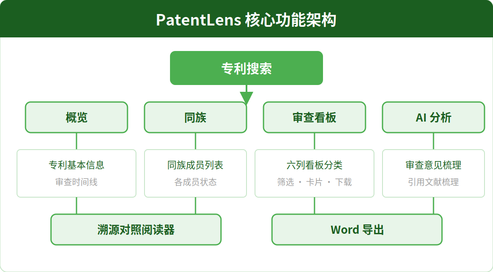
图 1-1 专利审查梳理工具核心功能架构
专利搜索
支持 US/EP/JP/DE/CN 多种专利号格式，自动从 USPTO/EPO/JPO/DPMAregister/CNIPA 获取审查历史文档，实时显示加载进度。
审查看板
六列看板式文档管理，将审查历史文档自动分类为审查意见、答复、请求、授权、通知和其他，支持关键词与类型筛选。
AI 分析
集成 DeepSeek、OpenAI 兼容接口、智谱 GLM 等 AI 服务，梳理审查意见和引用文献，支持手动选择文档和流式响应。
溯源对照阅读
全屏对照阅读器，左侧原文高亮引用，右侧 AI 分析内容，点击引用链接自动跳转对应段落。
Word 导出
将 AI 分析结果导出为 .docx 文件，Markdown 表格渲染为可编辑的 Word 表格，标题、粗体、列表格式完整保留。
审查时间线
在概览标签页内以可视化时间轴展示审查历程中的关键事件，配有彩色标记区分不同事件类型，一目了然掌握审查进度。
专利原文查询
点击专利号可直接查询 Google Patents 专利原文详情，支持 AI 问一问、网页翻译、Espacenet 查询、PDF 原文下载，引用文献一键复制全部公开号；右侧悬浮弹窗支持快速查阅多份专利。
1.3 系统要求
项目 要求 操作系统 Windows 10 1803（内部版本 17763）或更高版本 系统架构 x64（64 位） 运行时 Microsoft Edge WebView2 运行时（Windows 10 2004+ 及 Windows 11 已内置） 网络 使用搜索和 AI 功能需要互联网连接
2 安装与启动
2.1 安装版安装
下载安装程序 — 获取 PatentLens_x.x.x_x64-setup.exe 文件
运行安装程序 — 双击 .exe 文件，按照安装向导提示完成安装
启动软件 — 从桌面快捷方式或开始菜单启动专利审查梳理工具
2.2 便携版使用
解压文件 — 将压缩包解压到任意目录（如桌面、D 盘等）
运行程序 — 双击 PatentLens.exe 即可运行，无需安装
注意
便携版中
PatentLens.exe 与相关动态库必须位于同一目录下，请勿分开存放。
2.3 首次运行注意事项
首次运行时，Windows 可能弹出"Windows 已保护你的电脑"安全提示，请按以下步骤操作：
3 界面布局
3.1 整体布局结构
专利审查梳理工具采用顶部搜索栏 + 标签页内容区的布局结构，各区域功能明确、操作流畅：
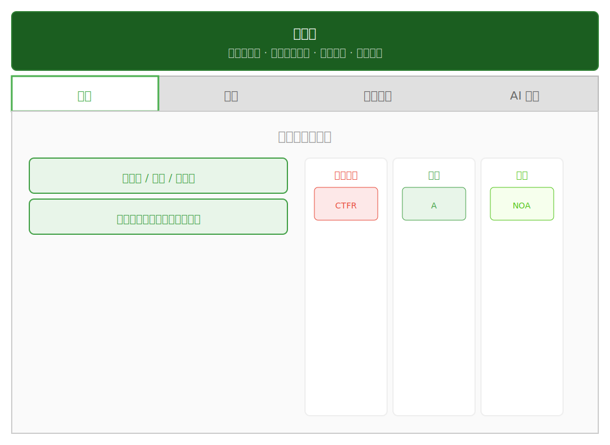
图 3-1 专利审查梳理工具界面布局示意
3.2 搜索栏
搜索栏位于窗口最顶部，是整个应用的入口，包含以下元素：
专利号输入框 — 输入专利号或申请号，支持 US、EP、JP、DE、CN 格式，系统自动识别专利局搜索按钮 — 点击后开始获取审查历史文档，搜索过程中显示加载进度AI 设置按钮 — 齿轮图标，点击打开 AI 设置对话框（AI 模型配置、API Key 等）主题切换 — 太阳/月亮图标，切换浅色/深色主题搜索提示 — 输入框下方显示支持的专利局和功能范围提示
3.3 标签页区域
标签页区域位于搜索栏下方，包含 4 个功能标签页：
3.4 概览标签页
概览标签页显示专利的基本信息，包括：
专利号 — 当前查看的专利号标题 — 专利标题申请人 — 专利申请人/专利权人申请日 — 专利申请日期当前审查状态 — 专利的当前审查进度状态审查时间线 — 以可视化时间轴展示审查历程中的关键事件，配有彩色标记区分不同事件类型
3.5 同族标签页
同族标签页展示专利族信息，包括：
同族成员列表 — 列出同一专利族在不同专利局的申请情况各成员状态 — 显示每个同族成员的审查状态
3.6 审查看板标签页
审查看板是核心功能区域，采用六列看板布局：
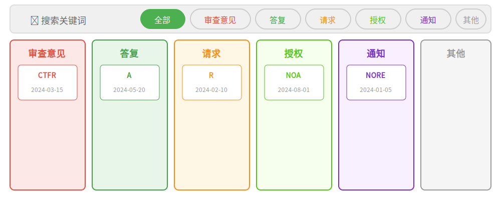
图 3-3 审查看板六列布局示意
六列看板 — 审查意见、答复、请求、授权、通知、其他文档卡片 — 每个文档显示为卡片，包含文档代码、名称、日期、类型标签筛选栏 — 顶部集成搜索输入框和类型筛选标签，支持关键词与类型同时筛选卡片展开 — 点击卡片可展开查看提取的文本内容操作按钮 — 每张卡片提供手动提取按钮和下载 PDF 按钮
3.7 AI 分析标签页
AI 分析标签页是 AI 智能分析的核心区域，包含以下功能区域：
手动选择面板（默认展开） — 进入标签页时自动展开，可勾选需要分析的文档，支持搜索过滤快速定位搜索过滤 — 在手动选择面板中输入关键词，实时筛选匹配的文档，方便快速定位目标文档已选摘要 — 面板底部显示当前已选文档数量和类型汇总，一目了然掌握选择范围梳理审查意见 — 一键启动 AI 分析所有审查文档梳理引用文献 — AI 分析审查意见中引用的对比文献分析结果展示 — 以 Markdown 格式展示 AI 分析结果阅读器按钮 — 打开全屏溯源对照阅读器导出 Word 按钮 — 将分析结果导出为 .docx 文件
4 快速入门
本章将以一个完整的操作流程，带您快速上手专利审查梳理工具的核心功能。
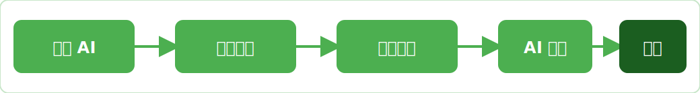
图 4-1 快速入门操作流程
4.1 配置 AI 服务
使用 AI 分析功能前，需先配置 AI 服务的 API Key：
选择 AI 服务商 （DeepSeek / OpenAI 兼容 / 智谱 GLM）
（可选）修改 API 端点 地址，以适配代理或私有部署
点击 "测试连接" 验证配置是否正确，确认成功后关闭对话框
提示
API 端点地址默认已填充各服务商的标准地址，一般情况下无需修改。如使用代理或私有部署，可自定义修改。
4.2 搜索专利
在搜索栏的 专利号输入框 中输入专利号或申请号，系统自动识别专利局
注意
请确保输入的专利号格式正确。US 专利号如 US12345678，EP 如 EP12345678，JP 如 JP12345678，DE 如 DE12345678，CN 如 CN12345678。系统会根据专利号前缀自动识别对应专利局。
4.3 浏览审查看板
点击 "审查看板" 标签页，查看自动分类的审查历史文档
文档自动归入六列看板：审查意见、答复、请求、授权、通知、其他
4.4 AI 分析审查意见
切换到 "AI 分析" 标签页，手动选择面板默认展开
在手动选择面板中，使用 搜索框 过滤文档，或直接勾选/取消勾选需要分析的文档
点击 "梳理审查意见" 按钮，AI 开始分析选中的审查文档
分析过程中可随时点击红色的 "中止梳理" 按钮中断
分析完成后，结果以 Markdown 格式 展示在页面中
（可选）点击 "梳理引用文献" 分析审查意见中引用的对比文献
4.5 导出与阅读
点击 阅读器按钮 ，打开全屏溯源对照阅读器，对照查看原文与 AI 分析
点击 "导出 Word" 按钮，将分析结果导出为 .docx 文件
完成
至此，您已完成专利审查梳理工具的核心操作流程。更多高级功能请参阅第 5 章功能详解。
5 功能详解
5.1 专利搜索
专利搜索是整个工具的入口，通过输入专利号获取审查历史文档。
支持的专利号格式
专利局 代码 专利号示例 说明 美国专利商标局 USPTO US12345678 美国专利/申请号 欧洲专利局 EPO EP12345678 欧洲专利/申请号 日本特许厅 JPO JP12345678 日本专利/申请号 德国专利商标局 DPMAregister DE12345678 德国专利/申请号（仅支持注册信息查询） 中国国家知识产权局 CNIPA CN12345678 中国专利/申请号
搜索流程
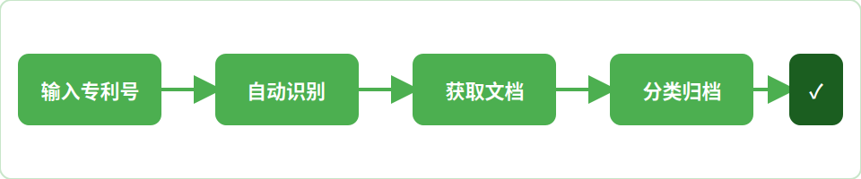
图 5-1 专利搜索处理流程
搜索过程中，界面会显示加载进度，包括：
连接状态 — 显示正在连接专利局服务器文档获取 — 显示已获取的文档数量分类处理 — 显示正在对文档进行分类和文本提取
5.2 概览
概览标签页提供专利的摘要信息，让用户快速了解当前专利的基本情况。
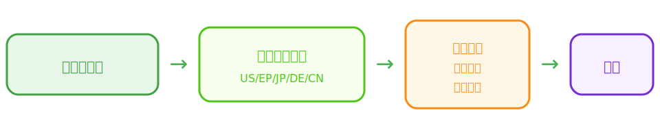
图 5-2 概览标签页示意
审查时间线
概览标签页内还包含审查时间线区域，以可视化方式展示专利审查历程中的关键事件。
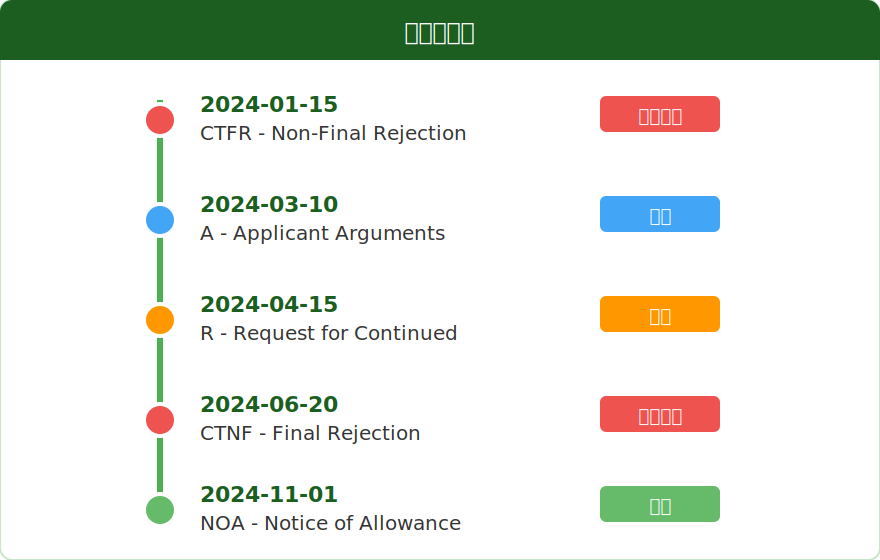
图 5-3 审查时间线示意
时间线功能特点：
按时间排序 — 所有事件按时间先后顺序排列彩色标记 — 不同类型事件使用不同颜色标记（审查意见-红色、答复-蓝色、请求-橙色、授权-绿色、通知-紫色）事件详情 — 每个事件显示日期、类型和描述
5.3 同族
同族标签页展示该专利在不同国家/地区的申请情况，帮助用户了解专利的全球布局。
字段 说明 同族成员 同一专利族在不同专利局的申请 专利号 各同族成员的专利号 专利局 对应的专利局 状态 各同族成员的当前审查状态
5.4 审查看板
审查看板是文档管理的核心功能，采用看板式布局将审查历史文档自动分类管理。
六列看板分类
列名 文档代码 颜色标识 说明 审查意见 CTFR、CTNF 等 红色 审查员发出的审查意见通知书 答复 A 等 蓝色 申请人提交的答复文件 请求 R 等 橙色 申请人提交的各类请求文件 授权 NOA 等 绿色 授权通知书等相关文件 通知 NORE 等 紫色 各类通知文件 其他 — 灰色 不属于以上分类的其他文档
文档卡片
每个文档在看板中显示为一张卡片，包含以下信息：
文档代码 — 如 CTFR、A、NOA 等文档名称 — 文件的完整名称日期 — 文档的提交或发出日期类型标签 — 彩色标签标识文档类型
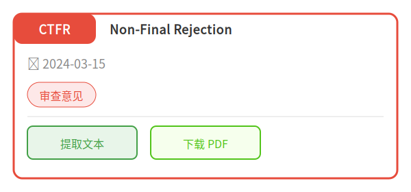
图 5-3 文档卡片示意
筛选功能
审查看板顶部集成了筛选栏，支持以下筛选方式：
关键词搜索 — 在搜索输入框中输入关键词，实时筛选包含该关键词的文档卡片类型筛选 — 点击类型标签（全部/审查意见/答复/请求/授权/通知/其他），按文档类型筛选组合筛选 — 关键词和类型筛选可同时使用，实现精确过滤
卡片操作
点击展开 — 点击卡片可展开查看提取的文本内容，再次点击收起手动提取 — 点击"提取文本"按钮，手动触发文档文本提取下载 PDF — 点击"下载 PDF"按钮，下载原始 PDF 文件
提示
看板各列等高显示，当文档较多时，列内可独立滚动浏览，不影响其他列的查看。
5.5 AI 分析
AI 分析是专利审查梳理工具的核心功能，通过调用 AI 大语言模型，自动对审查文档进行深度分析。
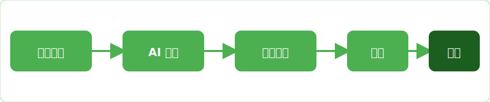
图 5-4 AI 分析处理流程
手动选择面板
进入 AI 分析标签页时，手动选择面板默认展开，用户可直接勾选需要分析的文档。面板提供以下功能：
搜索栏 — 面板顶部提供搜索输入框，输入关键词可实时过滤文档列表，快速定位目标文档文档列表 — 显示所有可用文档，每项包含文档代码、名称、日期和类型标签，点击复选框进行选择已选摘要 — 面板底部实时显示当前已选文档数量及类型汇总（如"已选 5 篇：审查意见 3 · 答复 2"），一目了然掌握选择范围快捷操作 — 提供全选、全不选、默认选择按钮，快速调整选择范围选择记忆 — 用户的手动选择状态会自动保留，切换标签页或重新进入时恢复上次的选择，无需重复操作
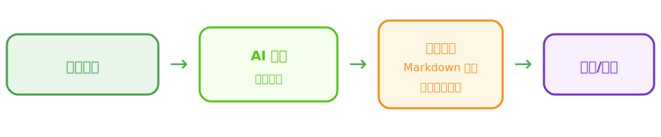
图 5-5 手动选择面板示意
提示
手动选择面板默认展开，方便用户在启动分析前确认和调整文档范围。选择状态会自动记忆，下次进入时无需重新选择。
梳理审查意见
点击"梳理审查意见"按钮，AI 将自动分析所有选中的审查文档，生成综合分析报告。分析内容包括：
各次审查意见的核心要点
审查员引用的对比文献及其应用
申请人的答复策略及效果
审查过程中的关键转折点
分析过程中：
流式响应 — AI 分析结果实时流式输出，无需等待全部完成中止梳理 — 分析过程中显示红色"中止梳理"按钮，可随时中断
注意
SPEC（说明书）文档默认不纳入 AI 分析范围。如需包含，可在手动选择面板中勾选。
梳理引用文献
点击"梳理引用文献"按钮，AI 将专门分析审查意见中引用的对比文献：
引用文献的基本信息
审查员如何引用该文献进行对比
申请人对引用文献的答复策略
引用文献与权利要求的对比分析
分析过程中同样支持流式响应和中止操作（红色"中止引用梳理"按钮）。
手动选择文档
用户可以手动选择需要纳入 AI 分析的文档，实现更精细的控制：
全选 — 勾选所有文档全不选 — 取消所有勾选默认选择 — 恢复默认勾选状态（审查意见 + 答复类型，排除 SPEC）单独勾选 — 点击每个文档前的复选框进行单独选择搜索过滤 — 在搜索栏输入关键词，快速筛选目标文档
提示
默认选择包含 office_action（审查意见）和 response（答复）类型的文档，SPEC（说明书）文档默认排除。您可以根据需要手动调整选择范围，选择状态会自动记忆。
分析结果展示
AI 分析结果以 Markdown 格式展示，支持以下交互：
阅读器按钮 — 打开全屏溯源对照阅读器，详见 5.6 节导出 Word 按钮 — 将分析结果导出为 .docx 文件，详见 5.7 节
5.6 溯源对照阅读器
溯源对照阅读器是一个全屏模态窗口，支持两种阅读模式：文本对照模式 和PDF 原文模式 ，用于对照查看原始文档、PDF原文和 AI 分析结果。
阅读器工具栏（翻页/缩放/OCR/翻译/搜索/标注工具）
PDF 原文区
高亮区域
划线
注释框
提取内容
对照翻译
AI / 翻译 / 对话区
高亮引用自动
定位跳转对应段落
支持 AI 连续对话
选区翻译 / 全文翻译
图 5-6 溯源对照阅读器（含 PDF 标注功能）示意
5.6.1 两种阅读模式
文本对照模式 — 左侧显示 OCR 提取的文档文本，右侧显示 AI 分析结果或翻译内容，原文中被引用的部分高亮显示，点击引用链接自动跳转对应段落PDF 原文模式 — 左侧显示原始 PDF 文档，支持缩放、翻页、全文搜索，右侧面板可切换查看提取内容、对照翻译或 AI 对话
5.6.2 PDF 标注工具栏
在 PDF 原文模式下，阅读器顶部第二行工具栏提供完整的 PDF 标注功能：
高亮
划线
箭头
注释
A
14px
2px
撤回
导出
图 5-7 PDF 标注工具栏示意
工具/功能 说明 快捷键 高亮 拖动选择矩形区域，生成半透明彩色高亮框，适合标记重要段落 — 划线 拖动绘制直线，可切换实线/虚线，适合画重点线 — 箭头 拖动绘制带箭头的直线，适合指向特定内容 — 注释 点击或拖动放置文字框，双击可输入批注文字 — 颜色选择 分别设置注释文字颜色和线条/高亮颜色，支持任意颜色 — 字号/线宽 注释文字大小（10-24px）和划线/箭头粗细（1-4px）可调 — 撤回 撤销上一步标注操作 Ctrl+Z 重做 恢复已撤销的标注操作 Ctrl+Y 导出标注后文档 将标注叠加到 PDF 原文上，导出为新的 PDF 文件保存 — 清空 清除当前文档的所有标注（不可恢复，请谨慎操作） —
提示
标注数据临时保存在当前会话中，导出前请勿关闭阅读器。点击"导出标注后文档"按钮可将所有标注永久保存到新 PDF 文件中。标注支持拖动调整位置、拖动线条端点调整长度和角度。
5.6.3 其他阅读器功能
翻页导航 — 上一页/下一页按钮，支持输入页码直接跳转缩放控制 — 放大/缩小/适应宽度，支持 Ctrl++/- 快捷键OCR 文字提取 — 点击 OCR 按钮提取当前文档文字，提取后可搜索和翻译全文翻译 — 翻译整个文档（未 OCR 时自动先提取文字）选区翻译 — 选中文本块后点击"译选"翻译选中部分全文搜索 — 输入关键词搜索文档内容，支持上一个/下一个匹配定位隐藏/显示 OCR — 切换 OCR 文本层的显示/隐藏右侧面板多标签 — 支持切换"提取内容"、"对照翻译"、"AI 对话"三个面板
5.7 Word 导出
AI 分析结果可导出为 .docx 文件，方便在 Word 中进一步编辑和分享。
Word 导出的格式处理：
Markdown 元素 Word 渲染方式 标题（# / ## / ###） Word 标题样式，层级对应 粗体（**text**） Word 加粗文本 列表（- item） Word 项目符号列表 表格（| col | col |） Word 可编辑表格，表头带彩色背景 普通段落 Word 正文段落
优势
Markdown 表格在导出时渲染为真正的 Word 表格，而非图片，可在 Word 中直接编辑单元格内容、调整列宽等。表头带有彩色背景，美观且易读。
5.8 设置
点击搜索栏右侧的齿轮图标，打开设置对话框，可配置 AI 模型相关参数。
AI 模型选择
支持以下三种 AI 服务商：
服务商 推荐模型 说明 DeepSeek deepseek-chat、deepseek-reasoner 国产 AI 服务，性价比高 OpenAI 兼容 gpt-4o、gpt-4o-mini、gpt-4-turbo 兼容 OpenAI API 格式的各类服务 智谱 GLM glm-4-plus、glm-4-flash、glm-4-air 智谱 AI 大语言模型
API Key 配置
选择服务商后，需要输入对应的 API Key：
模型测试
设置对话框提供"测试连接"功能，点击后系统将向 AI 服务发送一条测试消息，验证 API Key 和端点配置是否正确。测试成功后显示绿色提示，失败则显示错误信息。
提示
首次使用前，请务必完成 API Key 配置并通过测试连接验证。AI 分析功能依赖正确的 API 配置。
5.9 合并导出 PDF
合并导出 PDF 功能可将多份审查文档合并为一个 PDF 文件，方便整体查阅和归档。
封面页专利书目信息
合并导出的 PDF 文件会自动生成封面页，封面页包含以下专利书目信息：
专利号 — 当前专利的公开/授权编号标题 — 专利的完整标题申请人 — 专利申请人/专利权人名称申请日 — 专利申请的提交日期发明人 — 专利的发明人信息
提示
封面页的专利书目信息自动从概览标签页获取，无需手动输入。如信息不完整，请先在概览标签页确认数据是否加载成功。
5.10 专利原文查询
在审查文档界面中，所有出现专利号的位置均可点击查询该专利的原文详情，数据来源于 Google Patents。支持两种查看模式：全屏详情页和右侧悬浮弹窗。
审查文档 / AI 分析界面
例如：对比文件包括
US7456789B2
，其公开了...
以及
EP2056789B1
的特征在于...
（专利号为蓝色可点击链接）
→ 点击：右侧悬浮弹窗查看
→ Ctrl+点击：外部浏览器打开
专利详情弹窗
说明书
权利要求
引用文献
法律状态
AI问一问/翻译
GP/Espacenet/PDF
图 5-9 审查文档中专利号点击跳转交互示意
5.10.1 打开方式
全屏详情页 — 点击页面中任意可点击的专利号链接（按住 Ctrl 点击可直接在外部浏览器打开 Google Patents 页面），进入全屏专利原文详情页右侧悬浮弹窗 — AI 审查梳理结果中的专利号引用，点击后在右侧弹出悬浮窗口查看，支持同时打开多个专利标签页快速切换
AI 问一问
网页翻译
Google Patents
Espacenet
PDF原文
US7456789B2
专利标题：XXX 装置及方法
说明书
权利要求
引用文献
法律状态
引用专利 (12)
复制全部公开号
US5678123A ... | US6123456B1 ... | EP0987654B1 ...
图 5-10 专利原文详情页（全屏/弹窗统一布局）示意
5.10.2 顶部功能按钮
详情页和弹窗顶部均提供统一的功能按钮栏，所有按钮尺寸、高度和间距已统一，包含以下按钮：
AI 问一问 — 针对当前专利向 AI 提问，支持上下文连续对话网页翻译 — 使用 Google 翻译一键翻译整个页面内容Google Patents — 在应用内打开 Google Patents 原始页面Espacenet — 在应用内打开欧洲专利局 Espacenet 页面查询该专利PDF 原文 — 下载或查看专利的原始 PDF 文件（如有）
5.10.3 引用文献与一键复制
专利详情页的"引用文献"区域分为三个部分：引用专利 （本专利引用的在先专利）、被引用专利 （引用本专利的在后专利）、相似文档 （相关相似专利）。每个部分标题右侧均提供 "复制全部公开号" 按钮，点击即可一键复制该列表下所有专利的公开号（每行一个号码），复制成功后按钮会短暂显示"✓ 已复制"反馈提示。
5.10.4 标签页切换
专利详情页和弹窗内同样采用标签页布局，支持切换查看：
说明书 — 专利说明书全文权利要求 — 专利权利要求书引用文献 — 引用、被引用和相似专利列表法律状态 — 专利法律状态信息
提示
悬浮球仅在审查文档界面显示，在主页搜索状态和专利原文全屏详情页下会自动隐藏，避免干扰阅读。右侧弹窗支持多专利标签页，可以同时打开多份引用专利快速切换查阅，关闭弹窗时所有标签页一起关闭。
6 常见问题
Q1：首次运行时 Windows 提示"已保护你的电脑"怎么办？
这是 Windows SmartScreen 的正常安全提示。点击"更多信息" → "仍要运行"即可。专利审查梳理工具是安全的本地应用，不会收集或上传任何用户数据。
Q2：搜索专利时获取文档失败怎么办？
请检查以下几点：
专利号格式是否正确，系统是否正确识别了专利局
网络连接是否正常
该专利是否确实有审查历史文档（部分专利可能尚未公开审查历史）
目标专利局服务器是否可正常访问
Q3：AI 分析失败怎么办？
请检查以下几点：
API Key 是否正确填写
网络连接是否正常
API 端点地址是否正确（如使用代理需修改）
所选模型是否可用
可在设置中点击"测试连接"验证
Q4：支持哪些 AI 服务商和模型？
目前支持以下三种服务商：
服务商 推荐模型 DeepSeek deepseek-chat、deepseek-reasoner OpenAI 兼容 gpt-4o、gpt-4o-mini、gpt-4-turbo、gpt-3.5-turbo 智谱 AI (GLM) glm-4-plus、glm-4-flash、glm-4-air、glm-4
Q5：如何中止正在进行的 AI 分析？
AI 分析过程中，界面上会显示红色的"中止梳理"或"中止引用梳理"按钮，点击即可中断当前分析。已生成的部分结果会保留显示。
Q6：为什么 SPEC 文档默认不纳入 AI 分析？
SPEC（说明书）通常篇幅很长，纳入分析会消耗大量 Token 且对审查意见梳理帮助有限。默认排除 SPEC 可以提高分析效率、降低 API 调用成本。如需包含，可在手动选择面板中勾选 SPEC 文档。
Q7：手动选择的文档会保留吗？
会。AI 分析标签页中的手动选择状态会自动记忆，切换标签页或重新进入时恢复上次的选择，无需重复操作。如需重置，可点击"默认选择"按钮恢复默认勾选状态。
Q8：导出的 Word 文件中表格可以编辑吗？
可以。导出的 .docx 文件中，Markdown 表格已渲染为真正的 Word 表格，支持在 Word 中直接编辑单元格内容、调整列宽、修改样式等操作。表头带有彩色背景，可根据需要修改。
Q9：审查看板的筛选功能如何使用？
审查看板顶部提供两种筛选方式：①在搜索框中输入关键词，实时筛选包含该关键词的文档卡片；②点击类型标签（全部/审查意见/答复/请求/授权/通知/其他），按文档类型筛选。两种方式可同时使用，实现精确过滤。
Q10：溯源对照阅读器中的引用链接如何使用？
在阅读器左侧原文中，被引用的部分会以高亮显示，并带有可点击的链接标记。点击链接后，右侧内容区会自动滚动到对应的分析段落，方便对照查看。
Q11：软件运行需要什么运行时环境？
需要 Microsoft Edge WebView2 运行时。Windows 10 2004+ 和 Windows 11 已内置，无需额外安装。较早版本的 Windows 10 可能需要手动安装 WebView2 运行时。
Q12：手动选择文档中的"默认选择"是什么？
默认选择包含 office_action（审查意见）和 response（答复）类型的文档，同时排除 SPEC（说明书）文档。点击"默认选择"按钮可恢复到此默认状态。
Q13：审查看板各列可以独立滚动吗？
可以。看板各列等高显示，当某列中文档较多时，该列可独立上下滚动浏览，不影响其他列的查看。
7 附录
7.1 完整操作流程图
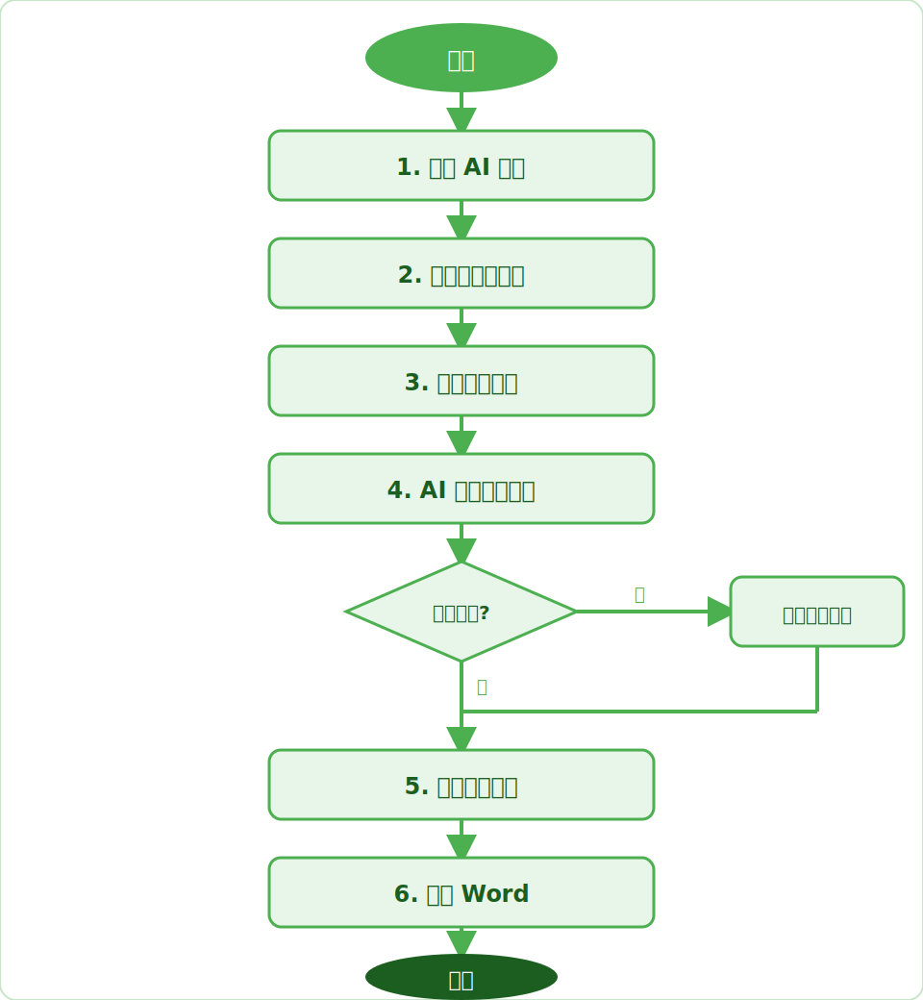
图 7-1 完整操作流程图
7.2 文档类型速查表
类型 文档代码 看板列 颜色标识 默认纳入 AI 分析 审查意见 CTFR、CTNF 等 审查意见 红色 是 答复 A 等 答复 蓝色 是 请求 R 等 请求 橙色 否 授权 NOA 等 授权 绿色 否 通知 NORE 等 通知 紫色 否 说明书 SPEC 其他 灰色 否（默认排除） 其他 — 其他 灰色 否
7.3 AI 服务配置参考
服务商 默认端点 推荐模型 获取 API Key DeepSeek https://api.deepseek.com deepseek-chat、deepseek-reasoner platform.deepseek.com 注册 OpenAI 兼容 https://api.openai.com gpt-4o、gpt-4o-mini 对应平台注册 智谱 AI (GLM) https://open.bigmodel.cn/api/paas glm-4-plus、glm-4-flash open.bigmodel.cn 注册
7.4 关键工作流
工作流一：标准审查意见梳理
工作流二：自定义文档分析
7.5 版本更新清单
V0.1.0 (2026-06)
字段 内容 变更类型 初始版本 影响章节 全部 变更说明 初始版本，建立说明书框架，覆盖核心功能说明：专利搜索、概览、同族、审查看板、AI 分析、时间线、溯源对照阅读器、Word 导出、设置 图示更新 全部图示首次绘制
V0.4.0 (2026-06)
字段 内容 变更类型 功能增强 影响章节 3.2、3.4、3.7、4.2、4.4、5.2、5.5、5.9、6 变更说明 1. AI 分析标签页手动选择面板默认展开，支持搜索过滤和已选摘要；2. AI 分析选择状态自动记忆，切换标签页后保留；3. 合并导出 PDF 封面页增加专利书目信息；4. 品牌升级为 PatentLens，配色方案更新为绿色主题；5. 搜索栏改为自动识别专利局，移除专利局下拉框；6. 时间线整合到概览标签页；7. 新增 DE 专利支持；8. 按钮名称更新 图示更新 更新 AI 分析相关图示，新增合并导出 PDF 图示
V0.5.0 (2026-07)
字段 内容 变更类型 功能增强 + UI 优化 影响章节 1.2、3.3、5.10（新增）、6 变更说明 1. 首页 4 个 TAB 栏（概览/同族/审查看板/AI 分析）容器宽度固定，不再随栏目切换发生横向长度变化，移除外侧多余阴影框；2. 专利原文详情页（含右侧弹窗）顶部按钮（AI 问一问、网页翻译、Google Patents、Espacenet、PDF 原文）统一尺寸高度和间距，视觉更整齐；3. 专利详情页及弹窗的引用专利、被引用专利、相似文档三个列表均新增"复制全部公开号"按钮，点击可一键复制该列表所有号码；4. 右侧弹窗新增"网页翻译"按钮，与全屏详情页功能一致；5. 悬浮球优化：仅在审查文档界面显示，主页和专利原文界面自动隐藏；6. 新增第 5.10 节"专利原文查询"完整功能说明 图示更新 无（本次为功能补全和 UI 优化，无新图示）
V0.5.1 (2026-07)
字段 内容 变更类型 文档补全 + 图示补充 影响章节 5.6、5.10 变更说明 1. 补充审查文档 PDF 标注功能完整说明，包括高亮、划线、箭头、文字注释四种标注工具，颜色/字号/线宽样式调整，撤回/重做快捷键操作，以及导出标注后 PDF 功能；2. 补充 PDF 阅读器其他功能说明（翻页、缩放、OCR、全文/选区翻译、全文搜索等）；3. 为专利原文查询模式新增图 5-9（号码点击跳转交互示意）和图 5-10（详情页布局示意）两张 SVG 简图；4. 更新图编号顺序；5. 5.6 节溯源对照阅读器重新组织为三种小节结构（两种阅读模式、PDF标注工具栏、其他功能） 图示更新 新增 3 张内嵌 SVG 简图（图 5-6 阅读器布局、图 5-7 标注工具栏、图 5-9 号码跳转、图 5-10 专利详情页）